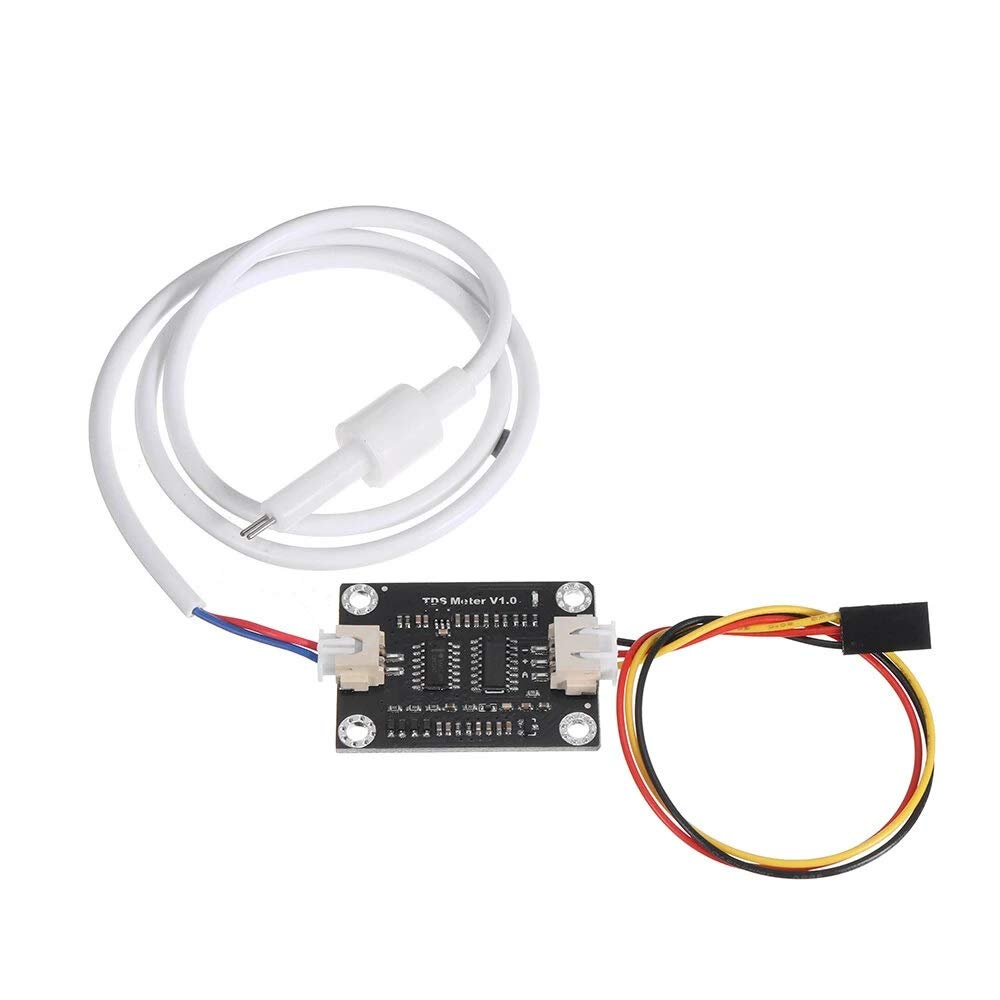
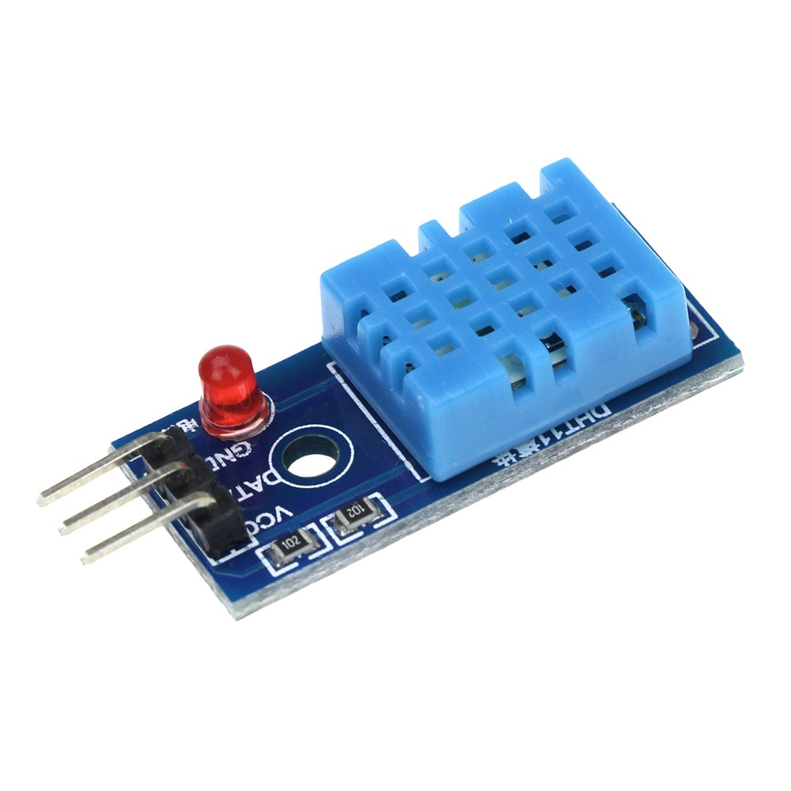
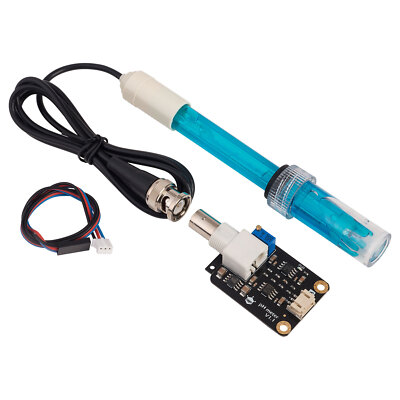
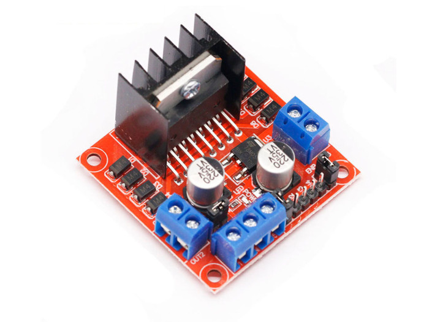
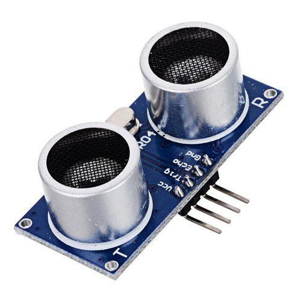
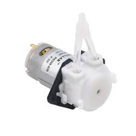
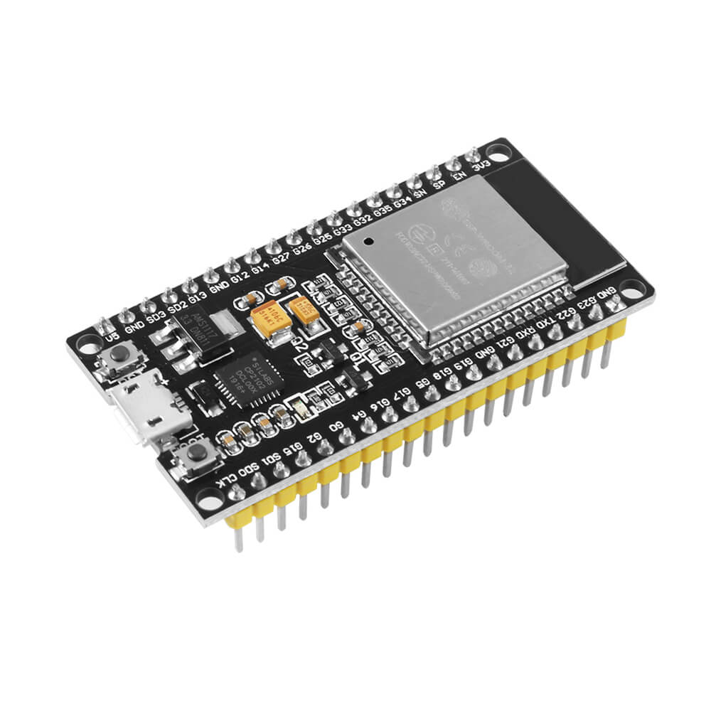

📘 Studi Literatur Greenhouse
Greenhouse atau rumah kaca adalah struktur yang dirancang untuk mengatur lingkungan tumbuh tanaman agar optimal, seperti suhu, kelembaban, dan pencahayaan. Ini memungkinkan pertanian dan perkebunan dilakukan sepanjang tahun tanpa tergantung cuaca atau musim.
Dalam praktiknya, greenhouse bisa menggunakan dua jenis media utama untuk budidaya tanaman: media tanah dan media air (hidroponik).
📊 Perbandingan Media Tanah vs Media Air (Hidroponik)
| Aspek | Media Tanah | Media Air (Hidroponik) |
|---|---|---|
| Definisi | Tanaman tumbuh di tanah secara langsung atau dalam pot | Tanaman tumbuh dalam larutan air berisi nutrisi |
| Nutrisi | Diperoleh dari unsur hara tanah | Disuplai secara langsung melalui larutan |
| Kebutuhan Air | Lebih banyak karena tanah menyerap air | Lebih hemat, sistem sirkulasi efisien |
| Pengendalian Hama | Lebih rentan terhadap hama tanah | Lingkungan lebih bersih, risiko hama lebih kecil |
| Pertumbuhan | Relatif lambat tergantung kesuburan tanah | Lebih cepat karena nutrisi terkontrol |
| Perawatan | Perlu penyiangan dan pemupukan rutin | Perlu pemantauan pH, TDS, dan nutrisi |
| Biaya Awal | Relatif rendah | Lebih tinggi karena memerlukan alat dan sistem |
| Hasil Panen | Tergantung cuaca dan musim | Konsisten dan bisa sepanjang tahun |
📌 Kesimpulan
Greenhouse modern sangat cocok dipadukan dengan sistem hidroponik dan teknologi sensor (TDS, suhu, pH) untuk menciptakan pertanian yang efisien, produktif, dan ramah lingkungan.
📄 Datasheet Sensor

Sensor TDS

Sensor DHT 11

Sensor pH

Motor Driver

HC-SR04 Sensor

Pompa Peristaltik

NodeMCU ESP32
🔒 Ganti Password
📅 Riwayat & Log Data
| Tanggal | Waktu | Aktivitas | PPM | Setpoint | Suhu | pH | Tinggi Air (cm) |
|---|